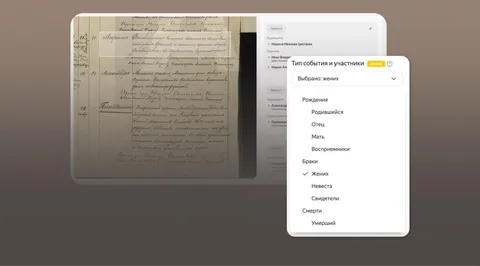

В Поиске по архивам появилась новая модель, которая не только распознаёт текст, но и извлекает связи между людьми — например, определяет, кто в документе отец, мать, жених, невеста, свидетель и прочее. Это умение очень важно, чтобы действительно помогать пользователям находить родственников.
Дарья Виноградова, руководитель команды универсального применения компьютерного зрения в Яндексе, и Анна Сидорова, главный разработчик распознавания архивов, рассказали на Хабре, почему универсальные VLM-модели не подошли для этой задачи и как удалось перейти от распознавания текста к извлечению структуры и смысла из документов.
Как было раньше
Прошлая версия системы представляла собой классический OCR-пайплайн. Детектор находил на скане строки, OCR-модель распознавала их по отдельности, а другая модель собирала в текстовые блоки.
Поиск работал в основном по текстовым совпадениям. Из-за этого вместе с нужными данными в выдачу попадали имена священников, номера записей, служебные пометки и другие нерелевантные части документа. Со временем проблемы стали чаще возникать на уровне структуры документа — из-за разбиения текста на строки и последующей склейки.
Как модель научили понимать структуру документов
В новой версии OCR остаётся отдельным этапом, но сам пайплайн строится уже вокруг структуры документа.
По сути, перед нами стояла KIE-задача (Key Information Extraction) — нужно было по изображению документа извлекать ключевую информацию о людях и их ролях. Но довольно быстро стало понятно, что работать со страницей целиком не получится. Типичный архивный скан имеет размер больше 2500 пикселей по стороне, содержит сразу несколько записей, а суммарно в них может упоминаться до 35 человек. Такой объём информации слишком большой и для модели, и для обучения. Поэтому мы решили сначала находить на странице отдельные записи — о рождении, браке или смерти — а уже потом извлекать информацию о людях из каждой выделенной области.
Для этого используют дообученную VLM‑модель Alice AI. Она получает изображение записи вместе с текстом от OCR и извлекает из документа структуру и связи между людьми. Ключевая метрика — доля людей, которых затем можно корректно найти по ФИО в сервисе. По ней модель достигает качества 90,5% на всех типах архивных записей.
Как усовершенствовали OCR
Параллельно команда перешла от строкового OCR к блочному. Так удалось убрать целый этап сборки строк в блоки, сократить количество моделей в пайплайне и уменьшить объём дополнительного процессинга при обработке сканов.
Однако переход к блочной архитектуре сильно усложнил требования к детектору. Если раньше ошибка означала, что какие-то строки просто плохо склеятся, то теперь модель рисковала целиком потерять нужный фрагмент документа.
При этом сами блоки оказались очень разными по размеру: модель могла получить как маленький кусок с одним словом, так и огромный фрагмент на много строк. Из-за этого команде пришлось отдельно дорабатывать энкодер и оптимизировать токенизацию — иначе обработка больших блоков становилась слишком дорогой по вычислениям.
После перехода на новый OCR-пайплайн recall распознавания вырос до 93,2% на основной выборке и до 88,1% — на сложной.
Детали реализации и сложные кейсы распознавания вы найдёте в полной версии статьи.
ML Underhood
